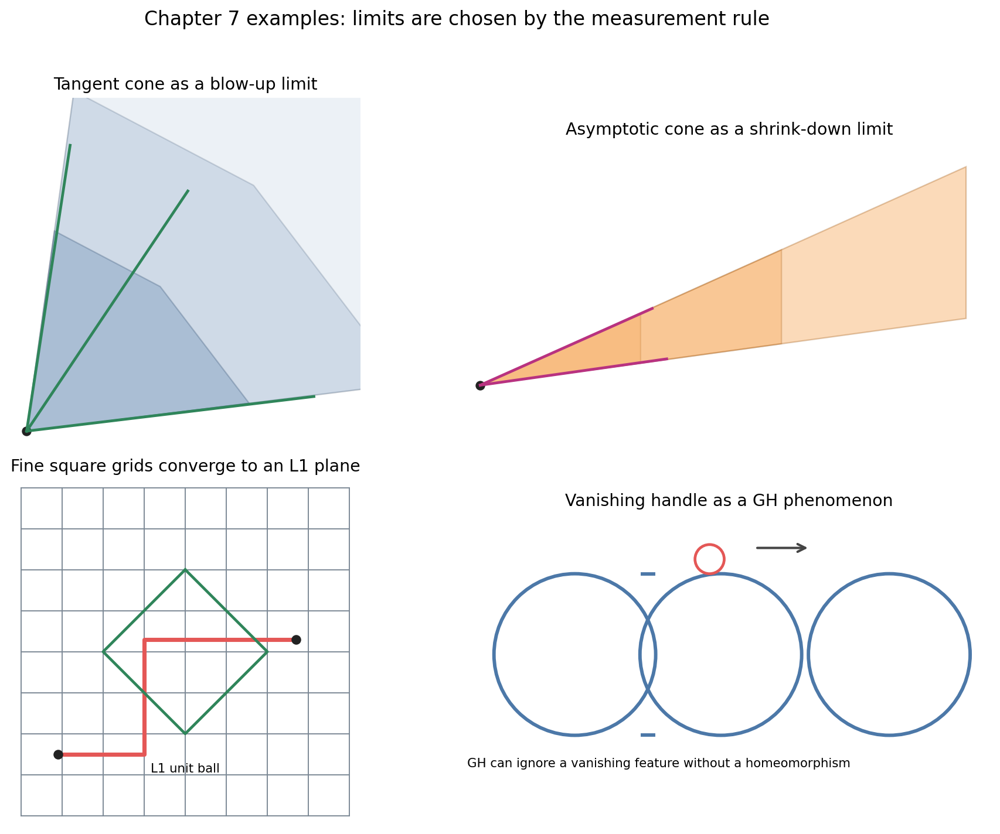
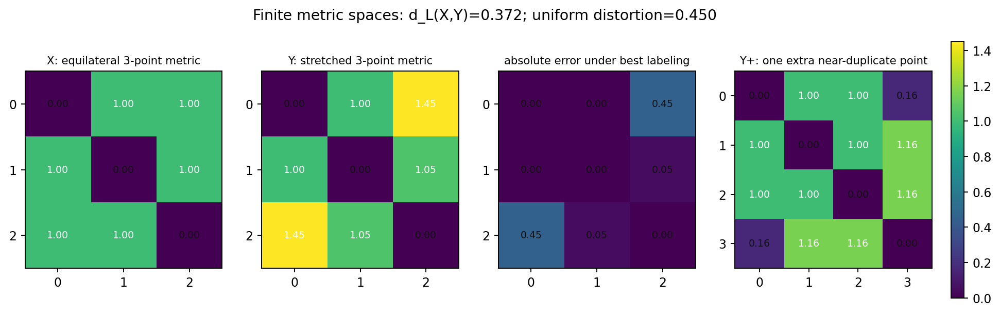
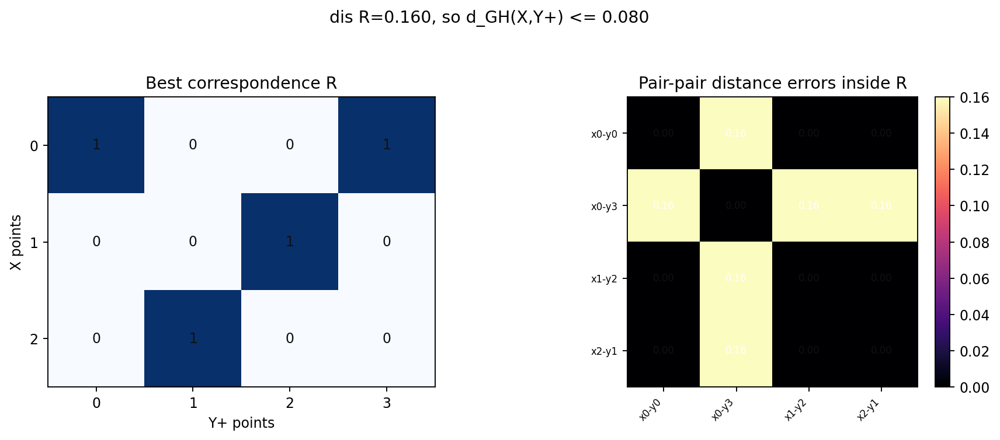
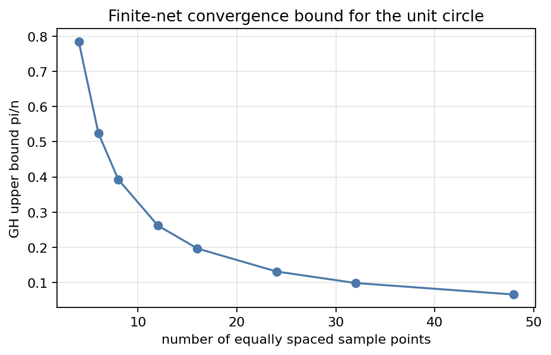
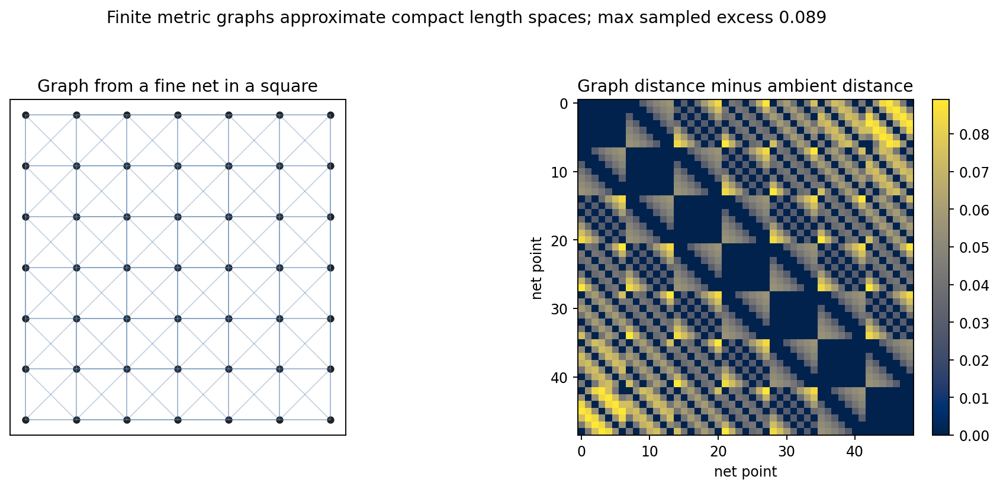
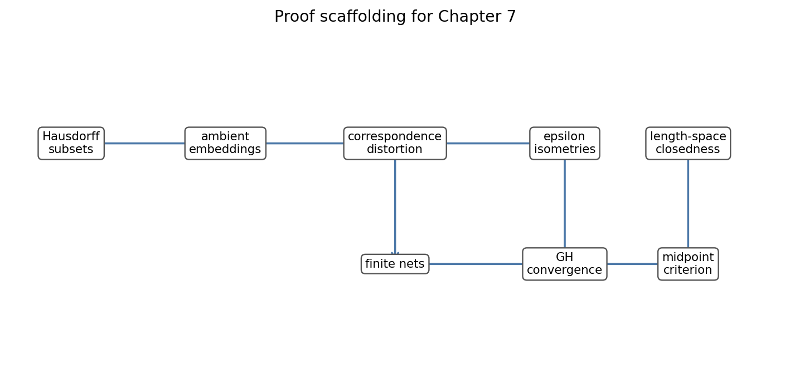

A chapter-specific lecture from A Course in Metric Geometry, Chapter 7.
Source grounding. Notebook: A-Course-in-Metric-Geometry/chapter-07-space-of-metric-spaces/07-space-of-metric-spaces.ipynb. Source span: printed pages 241-270; PDF pages 256-285. Source PDF: A-Course-in-Metric-Geometry/A Course in Metric Geometry.pdf.
A dense net should approach the continuum it samples, even though it has fewer points.
A small handle or spike may disappear in the limit while distances change only slightly.
Zooming in or out can reveal a cone, a norm, or a large-scale shape not visible at the original scale.

Tangent cones keep first-order directions near a base point.
Asymptotic cones record large-scale rays and coarse travel.
Gromov-Hausdorff limits can erase handles when their metric size vanishes.
All metrics live on the same underlying set, so every pair of points has a stable name.
The point set itself may change; only the finite distance patterns must become close.
The infimum runs over bi-Lipschitz homeomorphisms \(f:X\to Y\).

The notebook checks all finite bijections and records the best permutation as \((0,1,2)\).
\(d_L=0.371564\), while same-label uniform distortion is \(0.45\).
Small absolute changes and small relative changes are different tests.
Spaces of different topology are outside the comparison, however small the feature may be.
A triangle and the same triangle with one near-duplicate point cannot be bijectively matched.
Changing a very small distance by a factor of two may be a large Lipschitz error.
Desired replacement. Compare compact spaces by additive distance error after allowing a common ambient space, a relation, or an almost-isometric sampling map.
Hausdorff distance compares subsets already living in one metric space.
The infimum ranges over isometric embeddings into a common metric space \(Z\).
A correspondence \(R\subset X\times Y\) is a relation whose projections cover both \(X\) and \(Y\).
One point may be paired with several points; no point may be ignored.

Best correspondence distortion: \(0.16\). Finite \(d_{GH}\) upper bound: \(0.08\).
The largest highlighted cell controls the entire relation.
Place two spaces into a common ambient metric space and compare subsets.
Pair points flexibly and measure the worst distance-table error.
On tiny spaces, enumerate covering relations and compute the best distortion.
The map may be discontinuous, non-injective, or non-surjective. It is judged by metric error and coverage, not topology.
Isometry classes of compact metric spaces.
\(d_{GH}(X,Y)=0\) exactly when \(X\) and \(Y\) are isometric.
Compose near-optimal correspondences and add their distortions.

If \(S_n\) is an \(\epsilon_n\)-net in compact \(X\) and \(\epsilon_n\to0\), then \(S_n\to X\) in \(d_{GH}\).
For equally spaced intrinsic circle nets, the recorded upper bound is \(\pi/n\).
| n | upper bound |
|---|---|
| 8 | 0.3927 |
| 16 | 0.1963 |
| 48 | 0.0654 |
No sequence can escape by simply growing larger and larger.
At each resolution, one finite size bound sees every space in the family.
Proof sketch. Choose compatible nets at scales \(1,1/2,1/3,\ldots\). Pass to subsequences until all named pairwise distances converge, then quotient and complete the limiting semi-metric.

A complete Gromov-Hausdorff limit of compact length spaces is again a length space.
Sampled shortest-path metrics remain slightly longer than Euclidean samples; the recorded maximum sampled excess is \(0.0891\).
Approximate midpoints pass through low-distortion correspondences.

Use a small-distortion relation to lift \(x,y\in X\) to nearby \(x_n,y_n\in X_n\).
Length spaces provide approximate midpoints \(z_n\) between the lifted points.
Bring \(z_n\) back through the relation; the distortion estimates prove it is an approximate midpoint for \(x,y\).